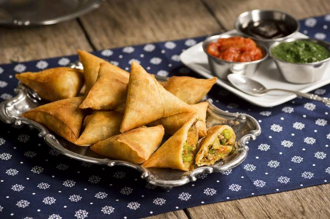

Simple samosa

Samosa is a classic Indian type of dumpling, normally stuffed with vegetable sause. As it is for the Indian cuisine, it's intensly seasoned but you can modify the amount of spices according to preference if you wish.
Samosa will be a perfect dish to serve to your guests or a great alternitve for a regular side dish or appetizer.
Ingredients
- 4 potatoes, peeled and cubed
- ¼ cup oil
- 2 small onions, finely chopped
- 3 tablespoons coriander seed
- 1 tablespoon curry powder
- 1 (1 inch) piece fresh ginger, grated
- 1 teaspoon salt
- 1 teaspoon ground turmeric
- 1 teaspoon ground cumin
- 2 roma (plum) tomatoes, finely chopped
- 4 prepared pie crusts
- 2 egg whites, beaten, or as needed
Steps
- Place potatoes into a large pot and cover with salted water; bring to a boil. Reduce heat to medium-low and simmer until tender, about 20 minutes. Drain and transfer potatoes to a bowl; coarsely mash.
- Heat oil in a skillet over medium-high heat; cook and stir onions, coriander seed, curry powder, ginger, salt, turmeric, cumin, allspice, cayenne pepper, and cinnamon until onion is lightly browned, about 5 minutes. Remove skillet from heat and stir tomatoes and peas into onion mixture; pour into mashed potatoes and thoroughly mix. Cool completely.
- Cut each pie crust into 8 even triangles. Spoon filling onto the wide end of each triangle; fold corners over filling creating a triangular 'hat' shape. Pinch the dough together to form a seal. Brush egg white over each samosa and arrange on a baking sheet.
- Bake in the preheated oven until samosas are golden brown, about 15 minutes.
Return to the main page